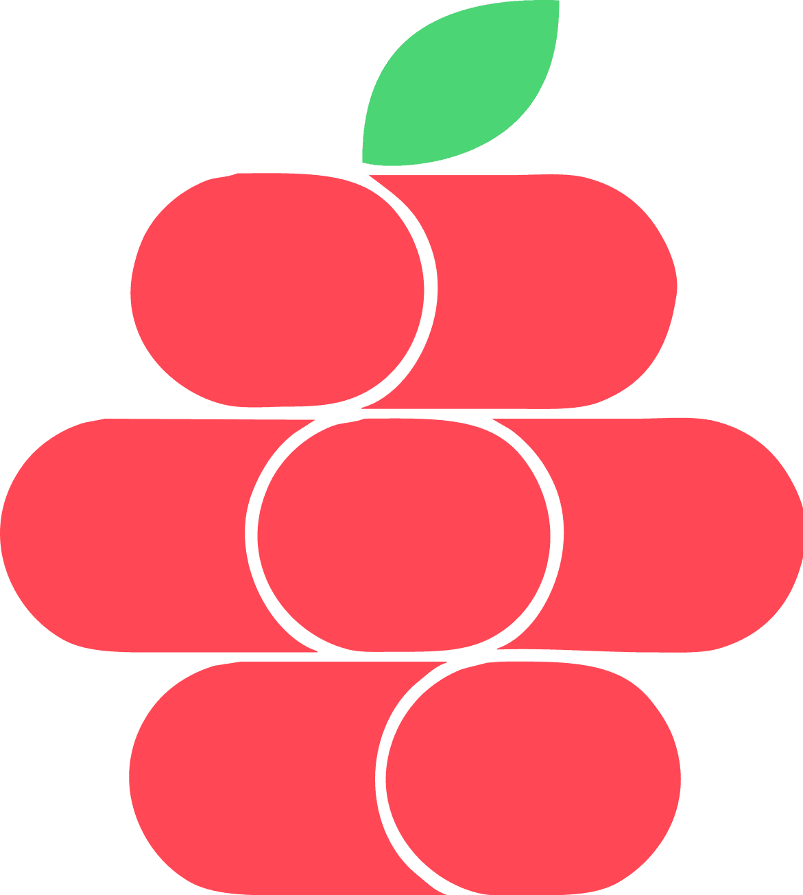
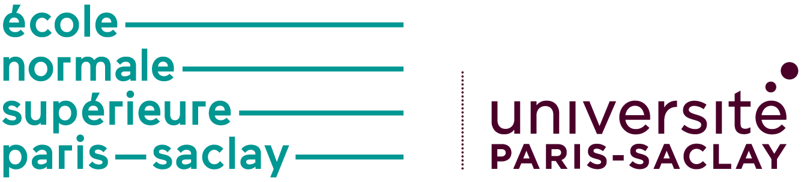
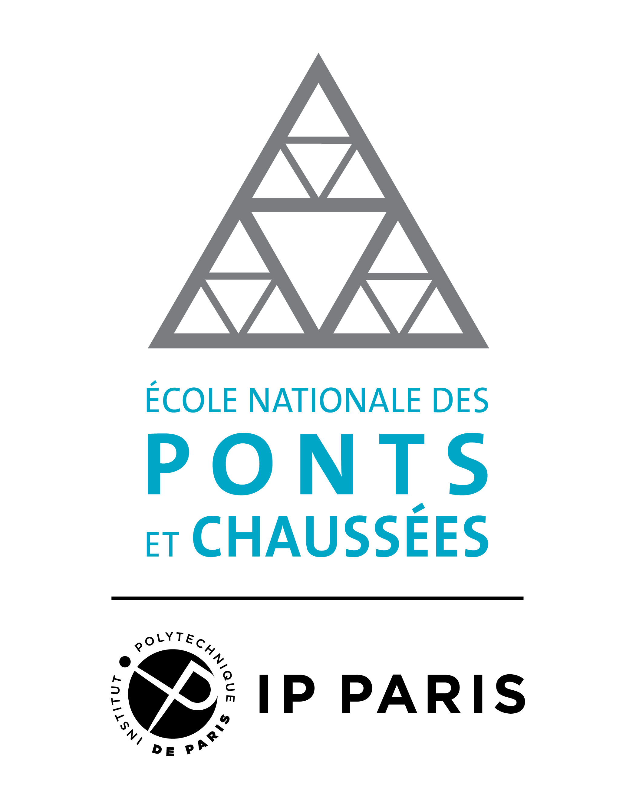

Neuralk AI · Paris
AI Research Intern · with Université de Lorraine
Research on tabular foundation models, synthetic data and multi-task learning; experience pretraining models with PyTorch on multi-GPU infrastructure.
Machine Learning · Tabular Foundation Models · Time-Series Forecasting
I recently completed a research internship at Neuralk AI, where I worked on tabular foundation models and contributed to Seldon. My research project explored multi-task learning, synthetic data generation and in-context prediction, in collaboration with researchers at Université de Lorraine.
Previously, I worked on financial data for systematic trading teams at Qube Research & Technologies and on demand forecasting at Ida, where I trained and evaluated time-series models.
My background is in mathematics and machine learning, through the MVA master’s at ENS Paris-Saclay and the engineering programme at École des Ponts ParisTech. I’m interested in foundation models for structured and temporal data, particularly model architectures, representation learning and generalization.
Neuralk released Seldon Large and Seldon Mini. At release, Seldon ranked third on TabArena and was on the performance–efficiency Pareto frontier. Announcement ↗
Co-authored the Seldon technical report ↗, introducing Neuralk’s tabular foundation model.
I’m interested in how models learn useful representations across datasets and generalize to new tasks.
Pretraining on diverse datasets, in-context learning, and understanding how the choice of synthetic data affects generalization.
Forecasting across domains, learning temporal representations and developing models that make effective use of historical context.
Exploring efficient sequence models, model design and pretraining objectives for structured and temporal data.
Learning representations of evolving systems that support prediction and simulation.
I investigated whether learning to recover causal structure from synthetic data could improve a tabular foundation model’s predictions. I designed a multi-task architecture, adapted the data generation process and evaluated it against a prediction-only baseline. In my experiments, the auxiliary task did not improve predictive performance, so I explored changes to the setup and the interaction between tasks.
AI Research Intern · with Université de Lorraine
Research on tabular foundation models, synthetic data and multi-task learning; experience pretraining models with PyTorch on multi-GPU infrastructure.
Data Engineer Intern
Built data pipelines for financial datasets used by systematic trading teams, including ingestion, normalization and data quality.

Ida · ParisData Scientist Intern
Worked on demand forecasting for retail, training and evaluating models including DeepAR against client baselines.

ENS Paris-Saclay
Master MVA · Mathematics, Vision & Learning

École des Ponts ParisTech
Engineering programme · Mathematics & Computer Science
Lycée Pasteur
Classes préparatoires · Mathematics & Physics